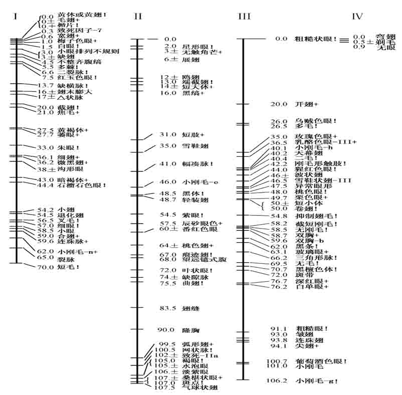
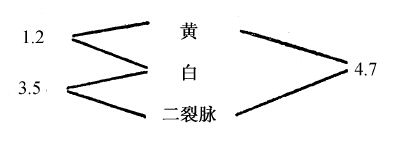

基因的直线排列
不言而喻，两对基因相距愈近，交换的机会愈小，相距愈远，交换的机会相应也愈大。利用这项关系可以求出任何两对要素相互间的距离。根据这种知识便能制出每一连锁群内许多要素相对位置的图表。果蝇的各连锁群都已经制成了图表。这样的图表（如图19），仅仅表示已经研究出来了的结果。
以上关于连锁和交换的例子里，都认为基因连接成直线，好像线上的联珠。事实上，从交换得到的数据证明，只有如下例（图20）的排列，才能同所得到的结果一致。
假设黄翅和白眼之间的交换率为1.2%，如果我们测验白眼和同组第三基因二裂脉之间的交换为3.5%（图20），如果二裂脉和白眼同在一条直线上面，并位于白眼的下侧，则二裂脉和黄眼之间，预期可得4.7%的交换率。如果二裂脉位于白与黄之间，则二裂脉和黄眼之间的互换，预期可得2.3%。事实上所得到的结果为4.7，所以我们把二裂脉排在图中白眼的下端。每逢一种新性状和同一连锁群内其他两种性状比较，总是得出这样的结果。新性状和已知的其他两个因子之间的任一交换值为其他两个交换值的和或差。这便是我们所熟知的直线上各点之间的关系；因为现在还没有发现任何其他空间关系可以满足这些条件。

图19 黑腹果蝇Ⅰ、Ⅱ、Ⅲ、Ⅳ四群连锁基因的图表。
各种性状左侧的数字代表“图距”（注：图距就是根据性状之间的交换率推论出来的基因之间的距离。——译者注。）

图20 示黄翅、白眼、二裂脉三个性连锁基因的直线排列